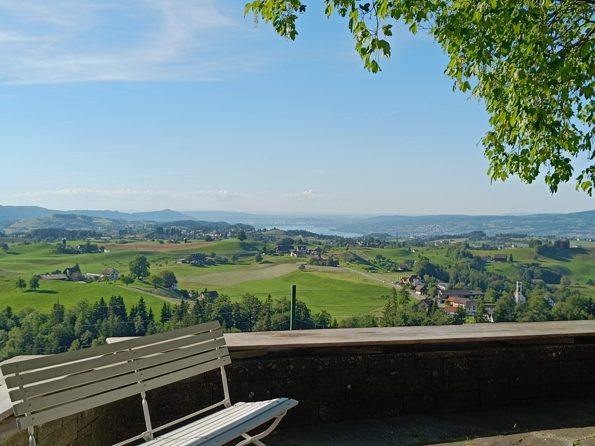
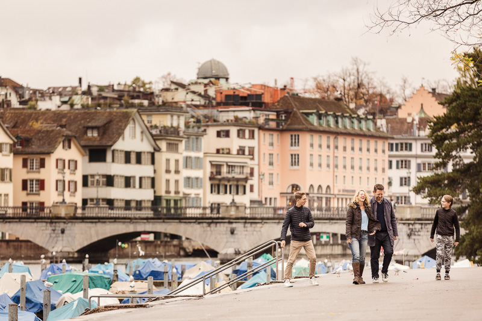

Przychylność Boża
...
Katolicka wspólnota Talitha (Halifax, UK) oraz Męska Grupa Zurych zapraszają na:
Czwartek:
Konferencja: "Jak nie przegrać życia"
W czwartek, 24 września, odbędzie się otwarta, wieczorna konferencja "Jak nie przegrać życia" – wstęp do weekendu. Może przyjść każdy, start od ok. godz. 18:30.
Piątek do niedzieli - warsztaty:
"Przychylność Boża"
Dlaczego jednym ludziom wszystko się układa, a Bóg wydaje się im sprzyjać, a innym nie? Jak przyciągnąć przychylność Bożą w swoim życiu i jak jej realnie doświadczyć?
Weekend poprowadzi Cię:
- ku wewnętrznemu wyciszeniu
- ku rozpoznaniu swojego prawdziwego stanu serca,
- ku głębszemu, osobistemu doświadczeniu obecności Boga.
Pani Ewa Józefowicz - od przeszło 25 lat towarzyszy małżeństwom, rodzinom i singlom w ich drodze, zawsze z indywidualnym podejściem do historii i potrzeb każdej osoby.
To warsztaty dla tych, którzy chcą świadomie tworzyć relacje oparte na Bogu i trwałej więzi.
Zapisz się już dziś – kliknij poniżej.
To może być początek czegoś naprawdę ważnego.

Czekamy na Ciebie!
Othmarsingen, 25-27 września 2026 r.
- Gdzie: Waaggasse 15, 5504 Othmarsingen
- Kiedy: Czwartek (konferencja) od 19:00, Piątek 17:00-20:30, Sobota 10:00-21:00, Niedziela 12:00-20:00
Uczestnictwo w warsztatach wiąże się z niewielkim kosztem 100 CHF od osoby dorosłej (dzieci gratis), konferencja jest bezpłatna.
Q&A
Pytania i odpowiedzi
-
Kto organizuje warsztaty?
Organizatorem jest Męska Grupa Zurych przy udziale katolickiej wspólnoty Talitha z Halifax (UK).
Kto jest prowadzącym?
Główną prowadzącą będzie pani Ewa Józefowicz z katolickiej wspólnoty Talitha (UK) - doświadczona liderka, mentorka, pasjonatka życia i ludzi a prywatnie żona i matka kilkorga dzieci. Wspomagać ją będą doświadczeni liderzy, mentorzy i praktycy z zakresu „psychologii życia codziennego”.
Czy muszę być wierzący, aby uczestniczyć?
Warsztaty są otwarte dla każdego, kto chce lepiej poznać samego siebie oraz poprawić jakość swojego otoczenia (rodziny, pracy, relacji itd.). Opieramy się na chrześcijaństwie, modlimy się razem, ale niczego nie narzucamy. Jeżeli to nie jest dla Ciebie przeszkodą, to serdecznie zapraszamy!
Co będziemy robić?
Dokładny program jest niespodzianką, ale możesz się spodziewać sporej dawki praktycznej wiedzy o tym, jak przyciągnąć przychylność Bożą do swojego życia, zrewidowania pewnych „oczywistych” prawd na swoje życie oraz czasu dla siebie i modlitwę.
Co to jest czwartkowa konferencja - "Jak nie przegrać życia"?
To odrębne, otwarte wydarzenie wieczorne w czwartek 24 września (start ok. 19:00), stanowiące wstęp do weekendu. Może na nie przyjść każdy, niezależnie od tego, czy planuje uczestniczyć w całym weekendzie.
Czy posiłki są zapewnione?
Tak, i to smaczne.
A co z dziećmi?
Zapewniamy opiekę nad dziećmi od 2 roku życia oraz komfortowe warunki uczestnictwa dla rodziców z młodszymi pociechami.
Termin płatości
Płatność do 15 września jest warunkiem uczestnictwa w warsztatach.
Świadectwa / opinie
Co dają mi warsztaty?
Dzięki tym treściom odkrywam, że mężczyzna nie jest stworzony do bylejakości, do ucieczek, do życia w cieniu oraz w leku. Każdy z nas jest powołany do wielkich rzeczy – do odpowiedzialności, odwagi i miłości, która przemienia świat wokół. Jako mężczyźni stajemy razem by budować wspólnotę po przez wiarę, odwagę, wspólną modlitwę oraz relacje z Bogiem. To spotkanie prowadzi kobieta, jej spojrzenie pełne mądrość i delikatności uczy nas równowagi miedzy stanowczością a czułością. Siła mężczyzny nie polega tylko na tym, by walczyć i zwyciężać, ale też na tym, by chronić, wspierać i budować.

Marcin
Operator
Wykłady Pani Ewy pomagają mi odkrywać siebie. Są nieocenioną instrukcją do pracy, by stać się określoną osobą, chcącą budować prawdziwie dojrzałe więzi z Bogiem i ludźmi. Jej osobowość, charyzma oraz jakość przekazu jest dla nas wszystkich prawdziwym błogosławieństwem.